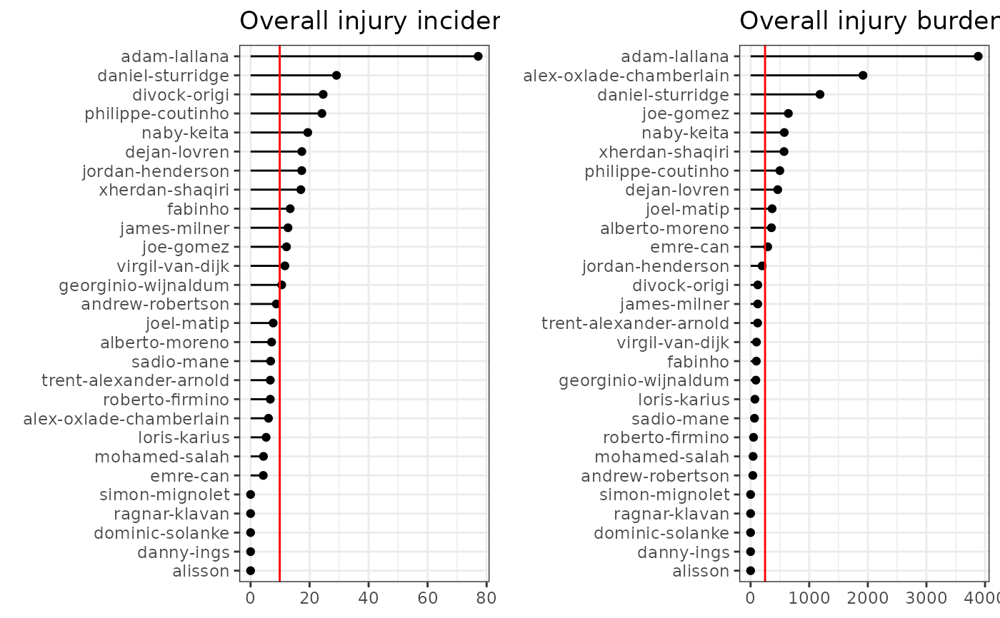

A bar chart that shows athlete-wise summary statistics, either case incidence or injury burden, ranked in descending order.
Usage
gg_rank(
injd,
by = NULL,
summary_stat = c("incidence", "burden", "ncases", "ndayslost"),
line_overall = FALSE,
title = NULL
)Arguments
- injd
injdS3 object (seeprepare_all()).- by
Character specifying the name of the column according to which compute summary statistics. It should refer to a (categorical) variable that describes a grouping factor (e.g. "type of case or injury", "injury location", "sports club"). Optional, defaults to
NULL.- summary_stat
A character value indicating whether to plot case incidence's (case's) or injury burden's (days losts') ranking. One of "incidence" ("ncases") or "burden" ("ndayslost"), respectively.
- line_overall
Logical, whether to draw a vertical red line indicating the overall incidence or burden. Defaults to
FALSE.- title
Text for the main title.
Examples
# \donttest{
df_exposures <- prepare_exp(raw_df_exposures, person_id = "player_name",
date = "year", time_expo = "minutes_played")
df_injuries <- prepare_inj(raw_df_injuries, person_id = "player_name",
date_injured = "from", date_recovered = "until")
injd <- prepare_all(data_exposures = df_exposures,
data_injuries = df_injuries,
exp_unit = "matches_minutes")
# }
p1 <- gg_rank(injd, summary_stat = "incidence",
line_overall = TRUE,
title = "Overall injury incidence per player") +
ggplot2::ylab(NULL)
p2 <- gg_rank(injd, summary_stat = "burden",
line_overall = TRUE,
title = "Overall injury burden per player") +
ggplot2::ylab(NULL)
# install.packages("gridExtra")
# library(gridExtra)
if (require("gridExtra")) {
gridExtra::grid.arrange(p1, p2, nrow = 1)
}
#> Loading required package: gridExtra
